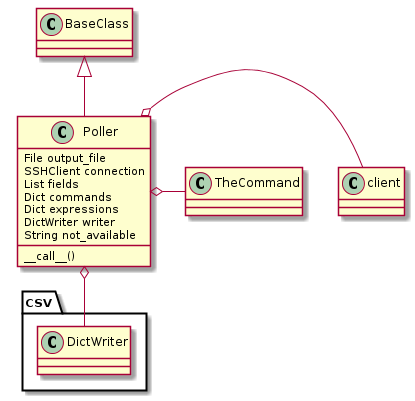
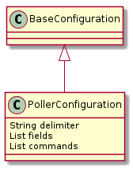
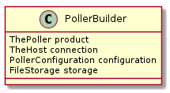

To accomodate the almost arbitrary ways to get device-state information from a device, a general Poller class was created to let user’s specify commands to send to the device and regular expressions to extract information from their output. This is related to the Query but is intended to run continuously in the background, calling the command(s) at periodic intervals.

BaseClass |
Poller |
|
Poller.timer |
|
Poller.output_file |
|
Poller.writer |
|
Poller.close |
|
Poller.run_once |
|
Poller.run |
|
Poller.__call__ |
|
Poller.check_rep |
|
Poller.__del__ |
TheCommand |
EventTimer |
|
wait |
The run_once method builds a dictionary of data output from the Poller’s commands. It always starts by adding a timestamp before calling each command. After calling each command once it writes the output as a row in the (csv) output-file.
The purpose of the enum is to make it easier to troubleshoot errors due to misspellings and provide an interface for users of this module to get the string constants they might need.
class PollerEnum(object):
__slots__ = ()
# special options
delimiter = 'delimiter'
interval = 'interval'
not_available = 'not_available'
filename = 'filename'
trap_errors = 'trap_errors'
connection = 'connection'
plugin = 'plugin'
component = 'component'
timeout = 'timeout'
# reserved names
reserved = [delimiter, not_available, filename, timeout,
interval, timeout,
trap_errors, connection, plugin, component]
# defaults
default_delimiter = ','
default_not_available = 'NA'
default_filename = 'poller_data.csv'
default_interval = 1
default_trap_errors = True
default_timeout = 10
The PollerConfiguration is used by the PollerBuilder to build the Poller. It takes a ConfigParser-like object and a section name and builds the parameters the PollerBuilder needs for the Poller.

BaseConfiguration |
PollerConfiguration |
|
PollerConfiguration.delimiter |
|
PollerConfiguration.interval |
|
PollerConfiguration.not_available |
|
PollerConfiguration.fields |
|
PollerConfiguration.commands |
|
PollerConfiguration.expressions |
|
PollerConfiguration.filename |
|
PollerConfiguration.timeout |
| value | default |
|---|---|
| delimiter | , |
| not_available | NA |
| interval | 1 Second |
| filename | query.csv |
| timout | 10 Seconds |
EXAMPLE_CONFIGURATION = """# these are arbitrary commands that will be call
ed in a thread
# it's original use-case is to get RSSI and other monitoring information
# but since it's free-form you can pass in whatever you like
# delimiter separating command and expression
# this is provided so that if the command or expression has a comma in it
# you can use an alternative
#delimiter = {delimiter}
# the interval is the amount of time between calling the commands
# if it's longer than a minute you can use words (e.g. day, hour)
# but not months (that's too hard to calculate) if you don't use a
# word it's assumed to be seconds
# interval = {interval}
# the timeout is the readline timeout
# if you want to specify a filename set the filename option
# filename = {filename}
# to change the readline timeout
# timeout = {timeout}
# to have it crash instead of trap socket errors
# trap_errors = {trap_errors}
# everything else is of the format:
# <column-header> = <command><delimiter><regular expression>
# the column-header will be used in the csv-file
# the regular expression has to have a group '()' or it will raise an error
#
#rssi = iwconfig wlan0,Signal\slevel=(-\d+\sdBm)
#noise = wl noise, (.*)
#bitrate = iwconfig wlan0, Bit\sRate=(\d+\.\d\sMb/s)
#counters = wl counters, (rxcrsglitch [0-9]* )
""".format(delimiter=PollerEnum.default_delimiter,
timeout=PollerEnum.default_timeout,
filename=PollerEnum.default_filename,
trap_errors=PollerEnum.default_trap_errors,
interval=PollerEnum.default_interval)
This is a first builder. The intent is that for each high-level component there will be a Class - Configuration - Builder troika. Each builder should know how to build its object, but defer to another builder if it needs something that is not unique to it.
- Configurations map config-files to parameters needed to build a component
- Builders map configurations and built-objects to built components
Given a connection to a device, a PollerConfiguration object and a file-like storage, the PollerBuilder will build a poller as its product.

PollerBuilder |
|
PollerBuilder.product |
|
PollerBuilder.commands |